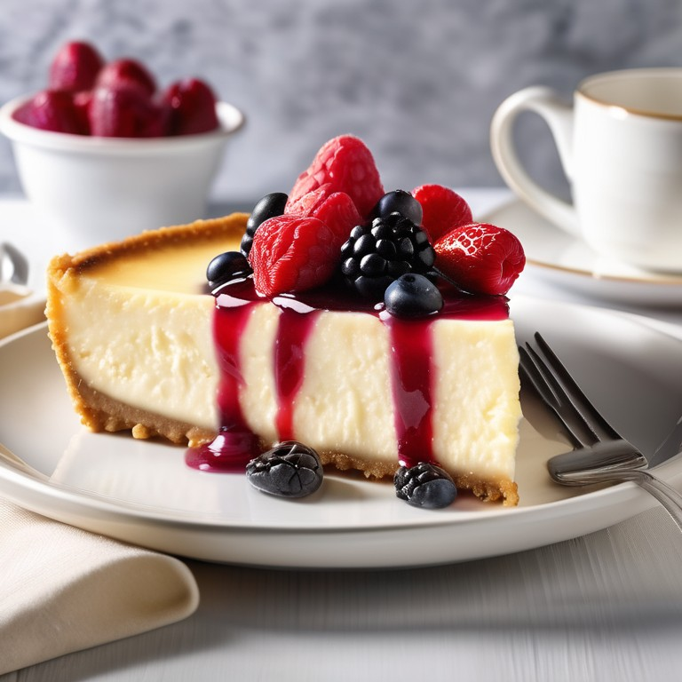

Return to main page

Treat yourself to the ultimate indulgence with this rich and velvety cheesecake. Boasting a buttery graham cracker crust and a creamy, tangy filling, this dessert strikes the perfect balance between sweetness and decadence. Baked to golden perfection, it’s a versatile dessert that can be dressed up with fresh fruit, chocolate drizzle, or a dollop of whipped cream. Whether for a holiday feast, a birthday celebration, or simply a well-deserved treat, this cheesecake is guaranteed to impress and satisfy every sweet tooth.
Ingredients
For the Crust:
- 1 1/2 cups graham cracker crumbs (about 12 crackers)
- 1/4 cup granulated sugar
- 1/2 cup unsalted butter, melted
For the Filling:
- 24 ounces (3 packages) cream cheese, softened
- 1 cup granulated sugar
- 3 large eggs
- 1 teaspoon vanilla extract
- 1 cup sour cream
- 2 tablespoons all-purpose flour (optional, for stability)
Optional Toppings:
- Fresh fruit (berries, sliced kiwi, or mango)
- Chocolate or caramel drizzle
- Whipped cream
Instructions
- Prepare the Crust:
- Preheat your oven to 325°F (163°C). Grease a 9-inch springform pan or line the bottom with parchment paper.
- In a medium bowl, combine graham cracker crumbs, sugar, and melted butter. Mix until the texture resembles wet sand.
- Press the mixture evenly into the bottom of the prepared pan. Use the bottom of a flat glass or measuring cup to pack it down firmly. Bake for 10 minutes, then set aside to cool.
- Make the Filling:
- In a large mixing bowl, beat the softened cream cheese and sugar with an electric mixer on medium speed until smooth and creamy, about 2-3 minutes.
- Add the eggs one at a time, mixing on low speed after each addition until just combined. Avoid overmixing to prevent cracks.
- Mix in the vanilla extract, sour cream, and flour (if using), ensuring a smooth and lump-free batter.
- Assemble the Cheesecake:
- Pour the filling over the cooled crust, spreading it evenly. Tap the pan gently on the counter to release any air bubbles.
- Bake the Cheesecake:
- Place the springform pan in a larger roasting pan and fill the roasting pan with hot water until it reaches halfway up the sides of the cheesecake pan (water bath method to prevent cracks).
- Bake in the preheated oven for 60-70 minutes, or until the edges are set and the center jiggles slightly when shaken.
- Cool the Cheesecake:
- Turn off the oven and crack the door open slightly. Let the cheesecake cool in the oven for 1 hour.
- Remove from the oven, then run a knife around the edges to loosen the cheesecake. Let it cool completely at room temperature before refrigerating for at least 4 hours or overnight.
- Serve:
- Carefully remove the cheesecake from the springform pan. Slice and serve as is, or add your favorite toppings like fruit, chocolate drizzle, or whipped cream
Enjoy!
This classic cheesecake is creamy, smooth, and absolutely divine. Perfect for any celebration or just to treat yourself!
Return to top
Return to main page